Similar & Congruent Figures — Practice Set
Bank code: GEO-SCF · Section: Geometry · 30 questions — Easy 7 · Medium 16 · Hard 7
Similar figures scale lengths by k, areas by k^2 and volumes by k^3; equal angles make triangles similar, but only a side makes them congruent.
Every question below is live in the question bank under the ID shown — the sheet and the portal are the same questions. Attempt a level with the clock running, then check Part C.
Part A — Questions
Quantitative Comparison — the four choices are always the same, so they are not reprinted: (A) Quantity A is greater · (B) Quantity B is greater · (C) The two quantities are equal · (D) The relationship cannot be determined from the information given
Level 1 · Easy — 7 questions · ~6 min
warm-up — these must be automatic
Q1 · GEO-SCF-002 · MCQ · 50s
Triangle ABC is similar to triangle DEF. If AB = 6, BC = 8, CA = 10, and DE = 9, what is the length of EF?
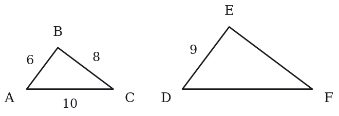
(A) 10
(B) 11
(C) 12
(D) 13
(E) 15
Q2 · GEO-SCF-003 · MCQ · 50s
Two similar rectangles have a scale factor of 4:1 (large to small). If the area of the larger rectangle is 80, what is the area of the smaller rectangle?
(A) 5
(B) 10
(C) 20
(D) 40
(E) 60
Q3 · GEO-SCF-004 · MCQ · 55s
Which of the following conditions guarantees that two triangles are congruent?
(A) Two pairs of equal angles
(B) Two pairs of equal sides
(C) Two pairs of equal sides and the equal angles between them
(D) Three pairs of equal angles
(E) Two pairs of equal sides and a pair of equal angles that are not between those sides
Q4 · GEO-SCF-005 · MCQ · 60s
A flagpole casts a shadow of 12 meters. At the same time, a 2-meter tall person casts a shadow of 3 meters. How tall is the flagpole?
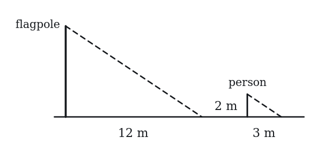
(A) 6 m
(B) 7 m
(C) 8 m
(D) 9 m
(E) 18 m
Q5 · GEO-SCF-006 · Numeric Entry · 40s
Two similar figures have sides in the ratio 2:7. If a side of the smaller figure is 6, what is the corresponding side of the larger figure?
Numeric entry — write the number.
Q6 · GEO-SCF-012 · MCQ · 55s
In triangle ABC, ∠A = 40° and ∠B = 70°. In triangle DEF, ∠D = 40° and ∠F = 70°. Which of the following must be true?
(A) Triangles ABC and DEF are congruent.
(B) Triangles ABC and DEF are similar.
(C) Triangles ABC and DEF have equal perimeters.
(D) ∠E = 40°
(E) ∠C = 40°
Q7 · GEO-SCF-013 · QC · 35s
Two congruent triangles, Triangle 1 and Triangle 2.
Quantity A: Area of Triangle 1 Quantity B: Area of Triangle 2
Level 2 · Medium — 16 questions · ~21 min
two or three steps, one planted trap each
Q8 · GEO-SCF-014 · MCQ · 60s
Two similar triangles have areas in the ratio 16:49. What is the ratio of their corresponding sides?
(A) 4:49
(B) 2:7
(C) 16:49
(D) 4:7
(E) 49:16
Q9 · GEO-SCF-015 · Numeric Entry · 70s
Two similar triangles have corresponding sides of length 5 and 8. If the area of the smaller triangle is 50, what is the area of the larger triangle?
Numeric entry — write the number.
Q10 · GEO-SCF-018 · MCQ · 75s
In triangle ABC, DE is parallel to BC, with D on AB and E on AC. If AD = 4, DB = 6, and BC = 15, what is the length of DE?
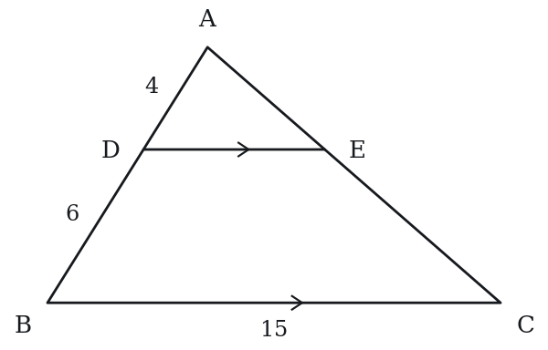
(A) 4
(B) 6
(C) 9
(D) 10
(E) 12
Q11 · GEO-SCF-019 · Select all that apply · 75s
Two similar triangles have corresponding sides in the ratio 3:1 (larger to smaller). Which of the following statements are true? Indicate all such statements.
(A) The perimeter of the larger triangle is 3 times the perimeter of the smaller triangle.
(B) The area of the larger triangle is 6 times the area of the smaller triangle.
(C) The area of the larger triangle is 9 times the area of the smaller triangle.
(D) Corresponding angles of the two triangles are equal.
(E) The two triangles are congruent.
Q12 · GEO-SCF-020 · Numeric Entry · 65s
Triangle ABC is similar to triangle PQR. AB = 10, BC = 14, AC = 8. If PQ = 15, what is the value of QR?
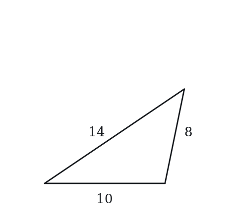
Numeric entry — write the number.
Q13 · GEO-SCF-021 · QC · 60s
Two similar triangles have corresponding sides of length x and 4x.
Quantity A: The ratio of their areas Quantity B: 1:16
Q14 · GEO-SCF-022 · MCQ · 80s
Two similar pyramids have surface areas in the ratio 4:9. What is the ratio of their volumes?
(A) 64:729
(B) 16:81
(C) 8:27
(D) 4:9
(E) 2:3
Q15 · GEO-SCF-025 · Select all that apply · 70s
Which of the following conditions guarantee that two triangles are congruent? Select all that apply.
(A) Three pairs of equal sides
(B) Two pairs of equal sides and equal included angles
(C) Two pairs of equal angles and equal included sides
(D) Three pairs of equal angles
(E) Two pairs of equal angles and a pair of equal non-included sides
Q16 · GEO-SCF-028 · QC · 70s
Two similar figures have a scale factor of k. k > 1.
Quantity A: The ratio of their areas (smaller to larger) Quantity B: 1/k
Q17 · GEO-SCF-030 · Select all that apply · 80s
Two similar figures have areas of 36 and 100. Select all true statements. Indicate all such statements.
(A) The scale factor (smaller to larger) is 3:5.
(B) The ratio of their perimeters (smaller to larger) is 9:25.
(C) The ratio of their areas is equivalent to (0.6)².
(D) If the smaller figure is a square with area 36, its side length is 9.
(E) The area ratio (smaller to larger) is 9:25.
Q18 · GEO-SCF-033 · MCQ · 80s
Two similar triangles have areas of 50 and 98. If a side of the smaller triangle is 10, what is the corresponding side of the larger triangle?
(A) 12
(B) 13
(C) 14
(D) 15
(E) 16
Q19 · GEO-SCF-041 · QC · 75s
Two similar triangles have perimeters of 30 and 42.
Quantity A: The ratio of their areas (smaller to larger) Quantity B: 25/49
Q20 · GEO-SCF-048 · QC · 120s
In triangle ABC, D is the midpoint of AB and E is the midpoint of AC. F is the midpoint of BC.
Quantity A: Area of triangle DEF Quantity B: Area of triangle ABC / 4
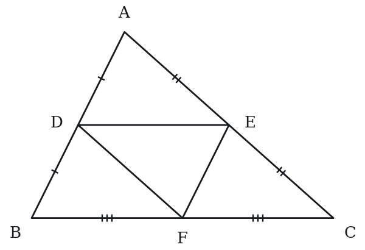
Q21 · GEO-SCF-KMF-003 · MCQ · 100s
In the figure, triangle KLM has a right angle at K. Point N lies on side KM and point P lies on side LM, with segment NP perpendicular to KM. The lengths satisfy KN : NM = 3 : 2, and triangle NPM has area 8 square units. What is the area, in square units, of quadrilateral KLPN?
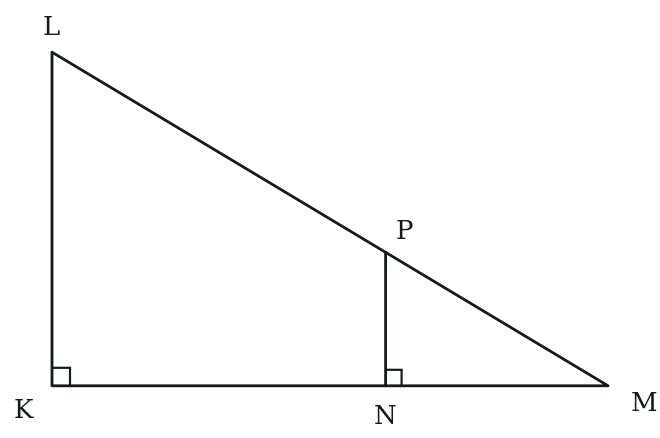
(A) 12
(B) 18
(C) 20
(D) 42
(E) 50
Q22 · GEO-SCF-KMF-007 · Numeric Entry · 90s
A surveyor wants the width AB of a lake. She picks points D and C on the shore so that segments AD and BC cross at a point R, with R between A and D and between B and C, and with DC parallel to AB. She measures RD = 20 meters, DC = 30 meters and RA = 90 meters. What is the width AB of the lake, in meters?
_____ meters
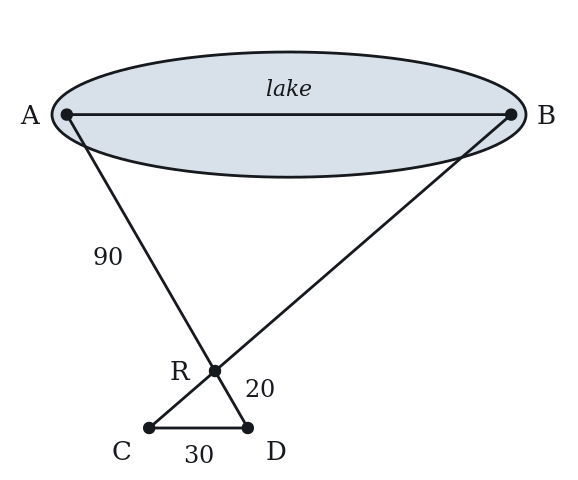
Numeric entry — write the number.
Q23 · GEO-SCF-KMF2-001 · Numeric Entry · 85s
In the figure above, QM and RN are both perpendicular to PN, and P, Q and R lie on one line. If PR = 24, QR = 9 and PM = 10, what is the length of MN?
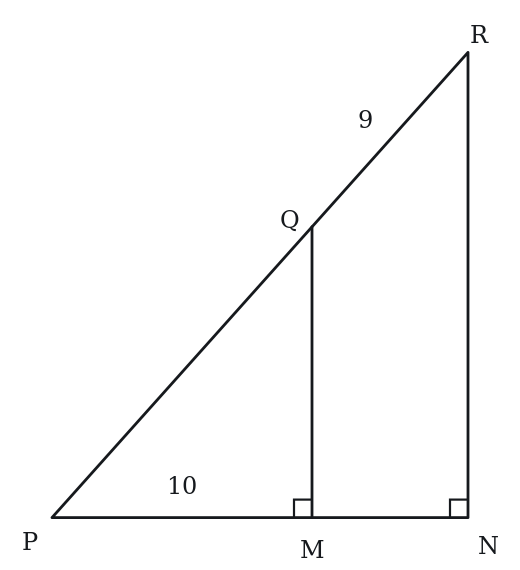
Numeric entry — write the number.
Level 3 · Hard — 7 questions · ~13 min
where 162+ is won or lost
Q24 · GEO-SCF-034 · MCQ · 95s
In triangle ABC, DE is drawn parallel to BC with D on AB and E on AC. The area of triangle ADE is 36 and the area of trapezoid BCED is 64. What is the ratio AD:DB?
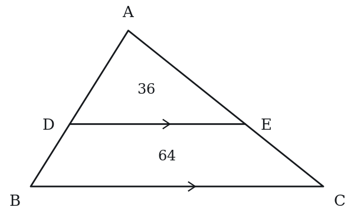
(A) 9:16
(B) 3:5
(C) 2:3
(D) 3:4
(E) 3:2
Q25 · GEO-SCF-036 · QC · 100s
Triangle ABC with AB = 15, BC = 20, CA = 25 (a right triangle, right angle at B). Point D is on AC such that BD ⊥ AC.
Quantity A: AD Quantity B: 9
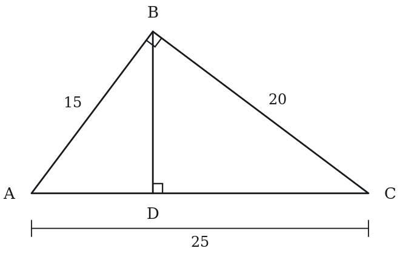
Q26 · GEO-SCF-038 · MCQ · 95s
In right triangle ABC (right angle at C), altitude CD is drawn to hypotenuse AB. If AD = 4 and DB = 9, what is the length of CD?
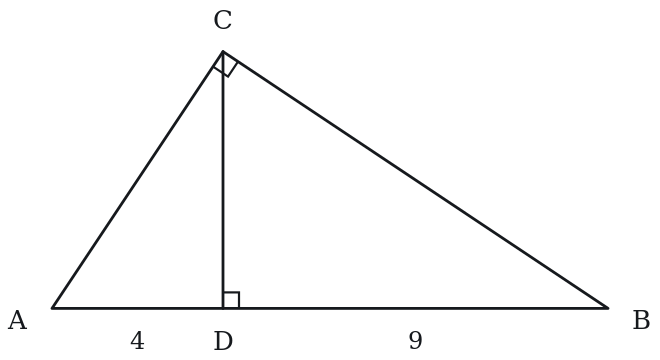
(A) √13
(B) 5
(C) 6
(D) 6.5
(E) 7
Q27 · GEO-SCF-045 · Select all that apply · 105s
Two similar rectangular prisms have volumes in the ratio 8:27. Which of the following statements are true? Select all that apply.
(A) The ratio of corresponding edge lengths (smaller to larger) is 2:3.
(B) The ratio of their surface areas is 4:9.
(C) The ratio of any pair of corresponding edges is 4:9.
(D) If the smaller prism has surface area 88, the larger has surface area 198.
(E) The ratio of their diagonals is 8:27.
Q28 · GEO-SCF-KMF-004 · Numeric Entry · 150s
The diagram shows a triangular pasture with a right angle at its lower right corner. Five straight fences are shown: the bottom fence, the sloping fence, and three parallel fences, each perpendicular to the bottom fence. The three parallel fences are spaced 240 meters apart, and the first of them is 240 meters from the left corner of the pasture. The bottom fence is 720 meters long and the right-hand parallel fence is 960 meters long. What is the combined length, in meters, of all five fences?
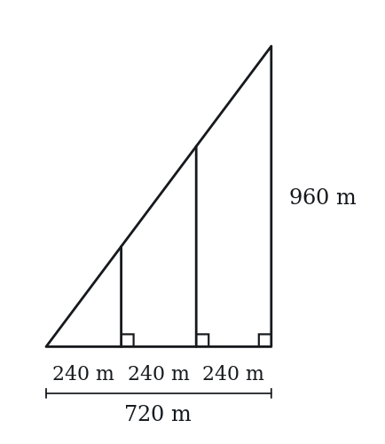
Numeric entry — write the number.
Q29 · SEC-PG-007 · QC · 125s
In the figure above, PQ = QR, point X lies on side PQ, point Y lies on side PR, and XY is perpendicular to PR. The area of triangle PXY is 1/8 the area of triangle PQR.
Note: Figure not drawn to scale.
Quantity A: The length of PY Quantity B: (1/8)(PR)
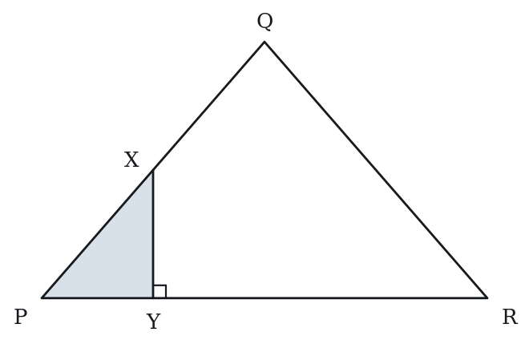
Q30 · SEC-PG-009 · Numeric Entry · 125s
The figure above shows a park bounded by a right triangle whose horizontal side is 1,200 meters and whose vertical side is 900 meters. Five straight paths run through the park: the three vertical segments shown, the horizontal side, and the slanted side. The three vertical paths are parallel to one another, and the points where they meet the horizontal path are equally spaced 400 meters apart. If paving costs $84 per meter of path, what is the total cost, in dollars, of paving all five paths?
Note: Figure not drawn to scale.
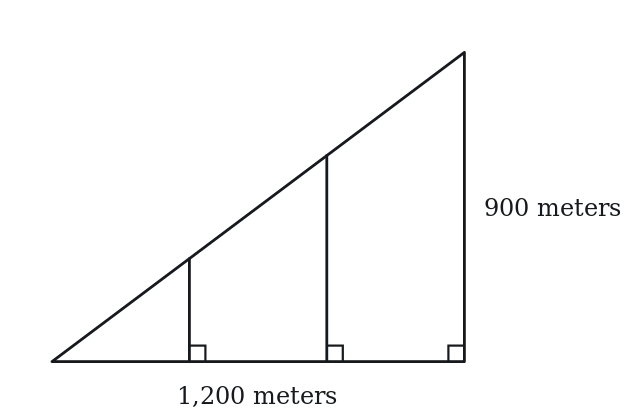
Numeric entry — write the number.
The rest of this sheet is part of Pro
All 30 questions, the answer key and full worked solutions with every trap named — plus 75 concept notes and 9,629 questions.